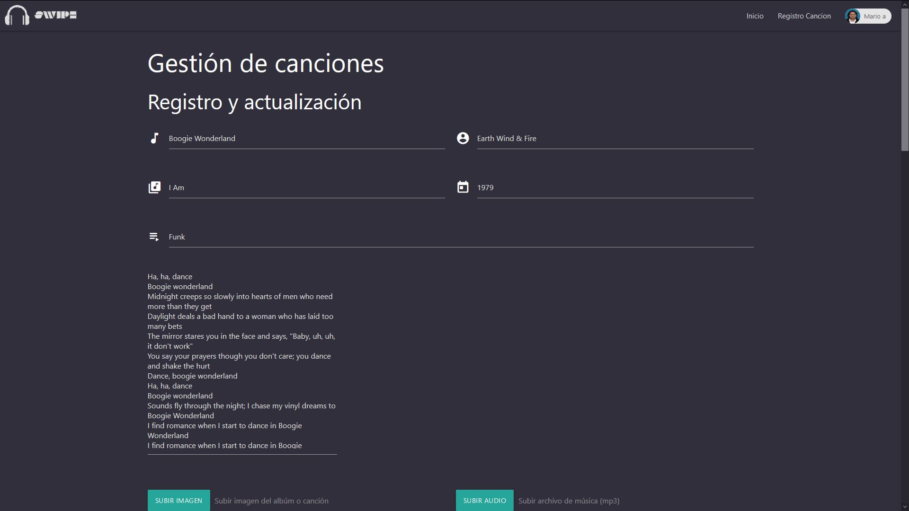
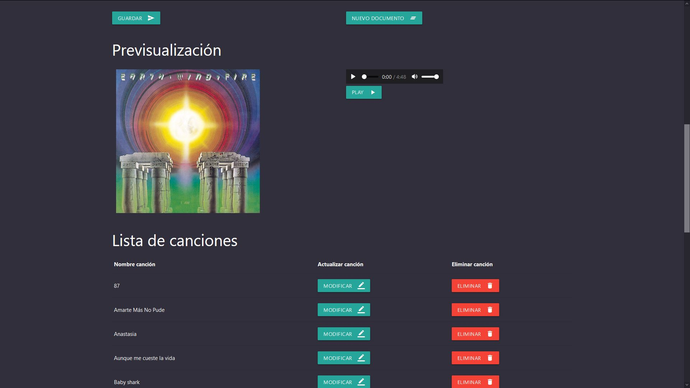

Swipe fue un projecto propuesto por Bictia en el cual estudiantes divididos por grupos tuvieron 2 semanas para generar un
aplicativo an engular similar a spotify el cual pudiera reproducir musica y mostrar información tomada de una base de datos
creada en MongoDB con ayuda de Node.
Participantes: